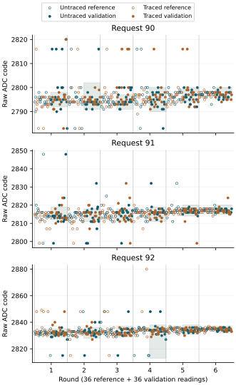
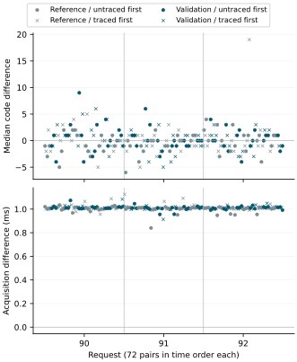

Returned observations
All 3888 acquisitions and all 648 pin traces were recovered. Every complete trace reconstructed all four recorded result octets: 2592/2592 octets agreed, with SCL high in all 20736 retained bit samples. No trace was incomplete. The declared diagnostic criterion was met.
Excursions persisted under both conditions, including 38 traced validation readings whose sampled bits reconstructed their recorded bytes exactly. This establishes agreement through the checked sample-to-byte transformation. It does not locate the origin of the sampled value or establish independent analog accuracy or conversion freshness.
Matched reception conditions
Each row contains 108 held-out readings and 36 nonoverlapping three-reading medians. No reading or median was unavailable. The same interval, fitted only from untraced references, assesses both conditions within each hold.
| Request | Condition | Below | Above | Raw inside | Medians inside |
|---|---|---|---|---|---|
| 90 | Untraced | 8 | 13 | 87/108 | 33/36 |
| 90 | Traced | 6 | 10 | 92/108 | 34/36 |
| 91 | Untraced | 7 | 7 | 94/108 | 36/36 |
| 91 | Traced | 6 | 8 | 94/108 | 35/36 |
| 92 | Untraced | 4 | 6 | 98/108 | 36/36 |
| 92 | Traced | 2 | 6 | 100/108 | 36/36 |
Raw departures totalled 45/324 without tracing and 38/324 with tracing. Both conditions retained 105/108 validation medians inside their intervals. Request-specific counts differ, but these descriptive totals from one boot do not establish an improvement or equivalence. Shared references, ordered acquisitions and unequal interval widths limit that interpretation.

Common interval widths ranged from 5 to 25 codes. At request 92 in round 4, untraced reference medians were 2832, 2834, 2836, 2835, 2834 and 2815. The last median widened the interval to 2813–2838. Consequently, low departure counts cannot by themselves demonstrate a narrow or stable distribution. Widths include no endpoint-count adjustment: width means upper minus lower.
All frozen intervals
| Round | Request | Position | Interval | Width |
|---|---|---|---|---|
| 1 | 90 | 1 | 2792–2798 | 6 |
| 1 | 91 | 2 | 2812–2819 | 7 |
| 1 | 92 | 3 | 2829–2835 | 6 |
| 2 | 91 | 1 | 2811–2818 | 7 |
| 2 | 92 | 2 | 2828–2836 | 8 |
| 2 | 90 | 3 | 2791–2802 | 11 |
| 3 | 92 | 1 | 2829–2837 | 8 |
| 3 | 90 | 2 | 2791–2797 | 6 |
| 3 | 91 | 3 | 2811–2818 | 7 |
| 4 | 90 | 1 | 2790–2800 | 10 |
| 4 | 92 | 2 | 2813–2838 | 25 |
| 4 | 91 | 3 | 2811–2819 | 8 |
| 5 | 91 | 1 | 2814–2820 | 6 |
| 5 | 90 | 2 | 2794–2800 | 6 |
| 5 | 92 | 3 | 2831–2838 | 7 |
| 6 | 92 | 1 | 2832–2837 | 5 |
| 6 | 91 | 2 | 2815–2820 | 5 |
| 6 | 90 | 3 | 2795–2800 | 5 |
Paired differences and timing
Each contrast subtracts an untraced triple median from its adjacent traced triple median. Each request supplies 36 reference pairs and 36 validation pairs. Traced-first order is balanced within both roles. The duration contrast applies the same subtraction to the median acquisition duration of each triple.
| Request | Role | Median code difference | Code difference range | Median duration difference (ms) |
|---|---|---|---|---|
| 90 | Reference | -1 | -5…5 | 1.008 |
| 90 | Validation | 1 | -4…9 | 1.015 |
| 91 | Reference | 0 | -6…3 | 1.010 |
| 91 | Validation | 0 | -5…6 | 1.009 |
| 92 | Reference | 0 | -4…19 | 1.010 |
| 92 | Validation | 0 | -4…4 | 1.012 |
All 216 paired duration differences were positive: median 1.010 ms, range 0.841–1.125 ms, using the reported 54 MHz counter frequency. The contrast includes acquisition work inside the recorded brackets, not every instruction added before them. It is an observed association with tracing, not an independently isolated instruction-cost measurement.
Validation code differences had medians +1, 0 and 0 at requests 90, 91 and 92. With traced-first and untraced-first pairs separated, their medians were respectively +1/+1, −0.5/0 and 0/0. A direction shared across requests was not observed. Reference and validation differences are kept separate.

Median departures
Six validation medians departed from their local interval, three in each condition. The table retains the original three readings and their zero-based final acquisition ordinal. A moderate departure together with one extreme reading can move the median outside; two identical extreme codes are not required.
| Ordinal | Request | Condition | Raw triple | Median | Interval |
|---|---|---|---|---|---|
| 494 | 90 | Untraced | 2816, 2800, 2795 | 2800 | 2792–2798 |
| 1127 | 91 | Traced | 2816, 2820, 2820 | 2820 | 2811–2818 |
| 1847 | 90 | Traced | 2795, 2800, 2816 | 2800 | 2791–2797 |
| 1862 | 90 | Traced | 2797, 2800, 2816 | 2800 | 2791–2797 |
| 1868 | 90 | Untraced | 2799, 2794, 2800 | 2799 | 2791–2797 |
| 3149 | 90 | Untraced | 2795, 2793, 2793 | 2793 | 2794–2800 |
Execution and recovery
All 3888 duplicate result pairs agreed. No operating guard failed. All 24 ordered counter brackets contained 1.5 GHz; their combined extent was 1.499197–1.500792 GHz. All six round restorations, final restoration and pin release reported success. These records do not independently verify the final analog voltage.
Acquisition occupied 138.428 seconds. The interval from trial entry to the final journal section was 1425.876 seconds (23 minutes 45.876 seconds), consistent with the established 26-minute procedure. All 32700 journal sectors were recovered, leaving four unused reservations, with no decoded journal issues.
Interpretation and next question
Correct reconstruction includes the traced excursions themselves. A sample-to-byte assembly error is therefore not supported for those recorded observations. Agreement uses the same sampled GPIO levels; it cannot exclude a coherently sampled erroneous bus value, ADC behaviour or analog variation. Tracing added acquisition time and did not remove the excursions. The untraced path has no pin trace, so the traced finding must not be promoted into an independent verification of every untraced bit.
The preceding held-request boots used twelve reference medians per interval; this experiment uses six. Absolute departure counts across those protocols therefore do not measure an effect of tracing. The valid direct comparison here is between the two conditions sharing each frozen interval.
The subsequent within-bit sampling return compares two observations of each result bit with original-reception controls. All 10368 bit comparisons agreed, including traced excursions. The added work increased median paired acquisition duration by 1.369 ms without removing departures; independent analog and conversion evidence remain needed.
Evidence and verification
Two read-only 64 MiB captures matched SHA-256 c82507d47fc26c2f00e12b9a875d1f81895376293bc4ad811acfba73d9f01a49 and preparation 523E4FB3C1B7. Nine returned-evidence checks reproduce the assessments, preserve excursions, verify paired counter differences and reference independence, and detect altered pin samples, corrupt records and missing journal sectors.
The MBR, partition geometry and boot files match the preparation; both FAT copies agree. Seven sectors outside the journal differ in allocation metadata and the host-visible System Volume Information directory. Their writer and time of modification are not established.
Question and rationale
The two held-request boots recovered excursions at requests 90, 91 and 92. Repeated result bytes agreed, yet some three-reading medians also departed from their local reference intervals. This leaves the origin unresolved: electrical variation, ADC behaviour and the shared reception path remain possible contributors.
This investigation checks whether the pin samples used during reception reconstruct the bytes subsequently recorded by the acquisition. A matched untraced condition measures changes associated with the instrumentation. Agreement would narrow the investigation to causes outside the checked sample-to-byte transformation; it would not demonstrate independent analog accuracy or a fresh conversion.
Acquisition protocol
Six rounds retain 216 nominal and 216 mixed reference readings, followed by three holds of 72 readings at requests 90, 91 and 92. The six request orders remain 90,91,92; 91,92,90; 92,90,91; 90,92,91; 91,90,92; 92,91,90. The complete schedule contains 3888 acquisitions.
Each hold contains twelve consecutive pairs of three-reading groups: one traced and one untraced group per pair. Traced-first order alternates with pair, round and hold position, giving six pairs of each order per hold. All nominal and mixed references are untraced. Triples retain the existing median unit; alternating pair order balances which condition is observed first. In total, 648 held readings are traced and 648 are untraced.
Every acquisition retains the L,H,L,H result-byte order, 10-microsecond minimum GPIO dwell, 1 ms pre-ADC settling and zero added acquisition wait. ADC reset, trigger, status observations, duplicate result reads and cleanup remain unchanged. Requests remain within 90–105; voltage restoration, pin release and the existing thermal and frequency guards are retained. The 24 adjacent counter windows keep their original schedule.
Control settings, counts and raw ADC values in this account are decimal. These experimental fields do not change SEIGRASM's default numeral system.
Recorded pin samples
For each traced reading, retain the final sampled SCL and SDA levels from every successful receive-bit call: four octets, eight samples per octet, in chronological order. These are the same GPIO observations used by the I²C byte-assembly instructions. There is no second sensor or independently timed electrical sample.
Each trace occupies two 64-bit words. The first packs the 32 two-bit samples, with SCL in the low bit and SDA in the high bit of each sample. The second records which samples were obtained. Bits arrive most significant first within each octet. Transport failures preserve the available prefix; missing samples remain unavailable. The original transport status is retained and no retry replaces the observation.
Configuration schema 24 identifies the layout. Section 9 retains 1744 words: its header and counter windows keep their prior locations; words 32–1327 contain 648 two-word trace slots in place of the previously unused extra-snapshot area. No extra ADC snapshots are requested. The native senary journal still requires at most 32700 of 32704 reserved sectors.
Declared assessment
Reconstruct each available octet from its eight recorded SDA samples and compare it with the corresponding recorded L,H,L,H octet. Report complete, incomplete and disagreeing traces separately, including byte position, availability and sampled clock levels. A byte captured before a later transport failure remains trace evidence even if the transfer did not publish that byte.
For each hold, use only the six untraced triple medians in its first 36 readings to freeze a common interval: [minimum median − 2, maximum median + 2], including both endpoints. Apply that interval to both conditions in the last 36 readings. Missing untraced reference observations make the interval unavailable; traced references and all validation observations cannot change it. Preserve both reference distributions and their interval width. This uses six common reference medians instead of the preceding protocol's twelve; excursion counts must therefore be compared within this experiment rather than treated as directly equivalent to earlier counts.
Each request supplies 108 held-out raw readings and 36 held-out medians per condition across six rounds. Retain inside, below, above and unavailable counts, complete code histograms and all twelve paired median differences per hold. Report paired acquisition-duration differences from the existing ordered counters, with traced-first order and reference/validation role. Orders are deterministic, and within-boot pairs share operating conditions; they do not constitute independent boots.
Diagnostic completion requires all 3888 valid acquisitions, 648 complete agreeing traces, complete common reference intervals, all 24 ordered counter windows, and successful restoration and release. Zero excursions are not required. A digital mismatch remains an outcome for investigation rather than being filtered from the report.
Execution and interpretation
The literal AArch64 instructions in SEIGRASM reception select traced groups and temporarily wrap pin calls during result-register reads. The wrapper records successful receive samples at the existing I²C return site before byte assembly. It restores the normal pin entry after every register return, including failure. The existing I²C, GPIO, ADC, guard and restoration instructions remain unchanged.
The wrapper executes on address, acknowledgement and data transitions within a traced register read; only receive-bit returns are recorded. Tracing therefore adds work throughout that register transaction. Its observed timing and distribution effects are therefore part of the comparison. An untraced acquisition uses the original pin entry; the common scheduling wrapper precedes the existing acquisition counters. Counter differences do not measure every instruction added before those counters.
PC packaging places literal instructions and trusted contexts without a foreign target compiler. The existing boot firmware still provides initial entry and hardware state. The PC reader reconstructs bytes and compares conditions from the returned journal. Supplied-device checks cover bit patterns, partial transfers, scheduling, ADC sequencing and native journal recovery; they do not establish physical performance.
If reconstructed bytes disagree, investigate the sampled-bit/assembly/recording relation before interpreting those values electrically. If reconstruction agrees while excursions persist, a software assembly explanation is weakened for the traced observations; electrical variation, ADC state and coherently sampled erroneous bus values remain unresolved. A trace-associated distribution change must be considered before extending traced findings to untraced reception.
Run and recovery
One 26-minute powered session uses the established SD workflow. The journal extent is unchanged; the preceding return reached its final journal section after 23 minutes 45 seconds. The returned counters establish the acquisition and recording durations above. Preserve the returned medium before preparing any subsequent boot.
Preparation
Preparation 523E4FB3C1B7 supplied this completed physical run. All 363 software checks passed, with no skipped checks or source changes during validation. The archive preserves 129 validated source files. All 37 preceding executable regions remain byte-identical; the new reception operation contains 101 literal instructions.
The 64 MiB SD image was verified in 4096 write blocks and two complete readbacks, followed by recorded media ejection. The prepared journal contained 32704 empty reservations bound to the new identity; the returned observations are reported above.
Preparation and parameters · Instruction comparison · Software validation · SD verification